点击左侧竖排边栏的第 1 个图标 —— 即黄色边框内的图标。
在左侧竖排导航栏中找到最上方的图标，它以黄色边框高亮显示。
单击该图标即可打开 Image Generator 工作区。
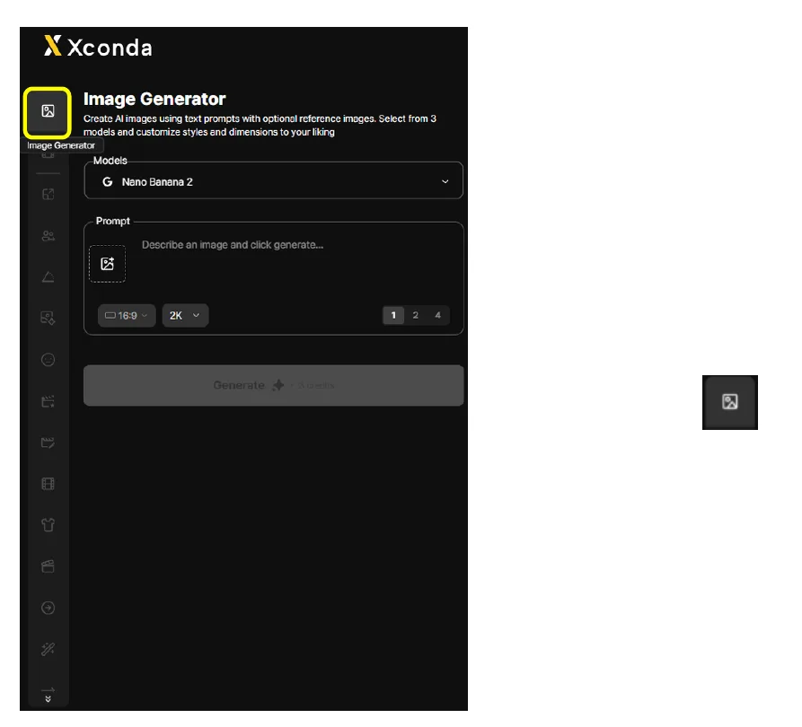
选择用于图像生成的 AI 模型。可从 7 个模型中选择。
这 7 个模型在最大参考图数量、文本准确度和结果质感上各不相同。此处先介绍前 3 个，其余在下一页说明。
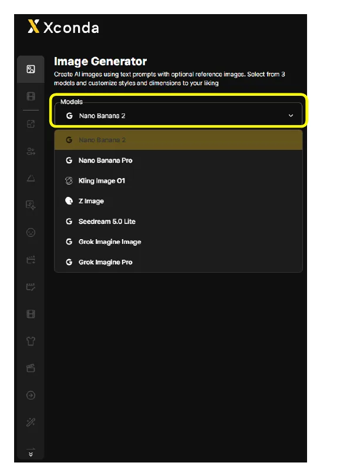
点击空白输入框，用文字描述你想生成的图像。提示词为必填项。
提示词 输入框单击一次，然后用文字描述你想生成的图像。
用英文书写可获得更准确的结果。
若之前使用过，会自动套用上一次的提示词。
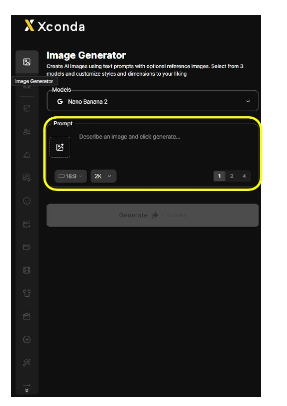
查看其余 4 个模型。
Z Image 是唯一支持反向提示词的模型，可明确排除不想要的元素。Seedream 与 Grok Imagine 系列则各自适合符合其特性的内容。
为了保存常用的参考图并反复使用，请从顶部菜单进入 Library。
点击屏幕右上角的帐户菜单，打开下拉菜单(Pricing, Library, QNA, Language, Log out)。
点击用黄色框突出显示的 Library ，即可进入专用的素材保管画面。
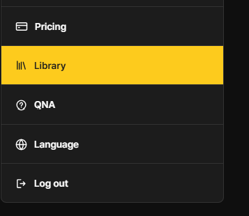
在 Library 的 Uploads 选项卡中点击 + Add asset，注册要使用的素材的名称、说明和媒体文件。
New Asset 窗口左侧输入素材名称(Enter asset name，最多 100 个字符)和说明(Add description，最多 500 个字符)。
点击右侧的 Upload media 虚线区域，或拖入文件上传，然后点击底部的 Create 按钮保存。
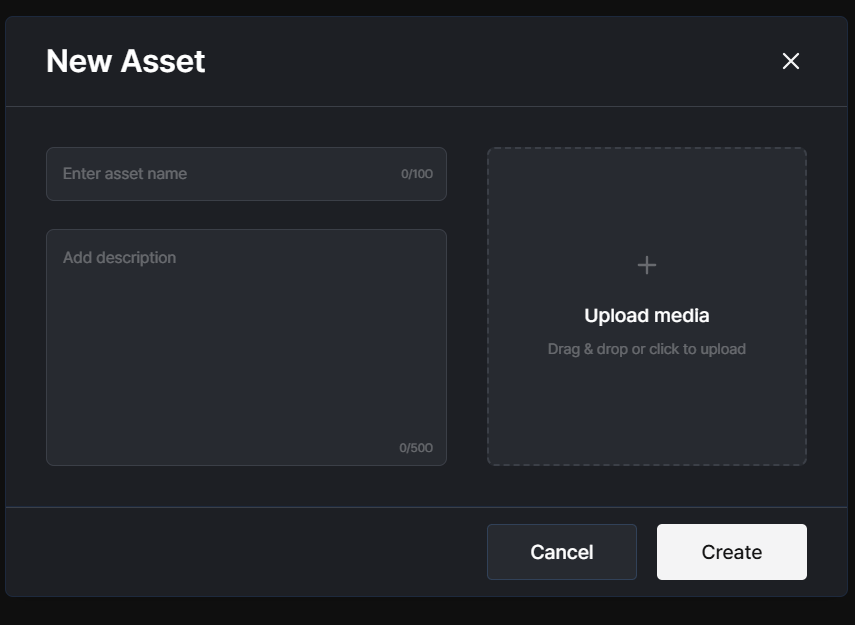
查看 Uploads 选项卡中注册的素材，并可下载或删除。
Uploads 选项卡中查看通过 + Add asset 添加的素材卡片(例如: '미켈란젤로 천지창조')。在右侧的 Generations 选项卡中，可以集中查看已生成的图像。
点击每张素材卡片右下角的下载图标可保存原图，点击垃圾桶图标可将其从素材库中删除。
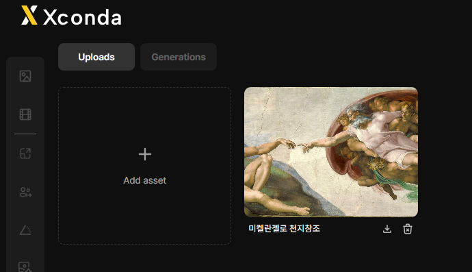
在 Image Generator 的 Input Assets 区域添加参考图，或打开右侧的管理面板。
点击左侧 Input Assets 区域的 + Reference 按钮，或右上角的 Manage >，屏幕右侧会打开素材管理面板。
在右侧面板的 Reference 选项卡中点击 + Add，上传仅供当前任务使用的图片。勾选的素材会按 @Image1、@Image2 的形式编号。
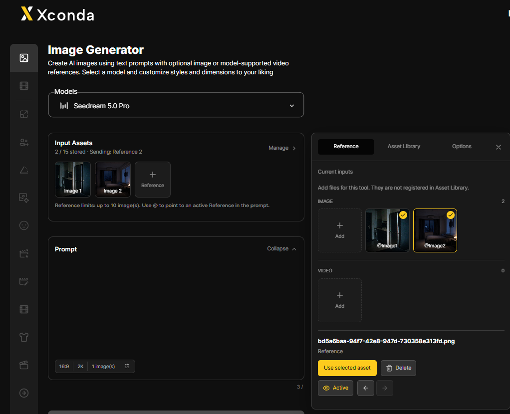
在 Asset Library 选项卡中选择已保存的素材并加载，在提示词中使用 @Image 标签引用。
点击右侧面板顶部的 Asset Library 选项卡，在 Saved assets 列表中选择要使用的图片，然后点击底部的黄色 Use selected assets 按钮。
所选素材会添加到 Input Assets(3 / 15 stored · Sending: Reference 3)，并被赋予 @Image3。可通过底部的 Active 按钮切换启用状态，用箭头(← →)调整编号顺序，在提示词中输入 @Image1 ~ @Image3 进行调用。
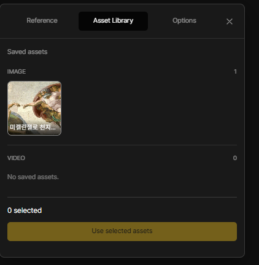
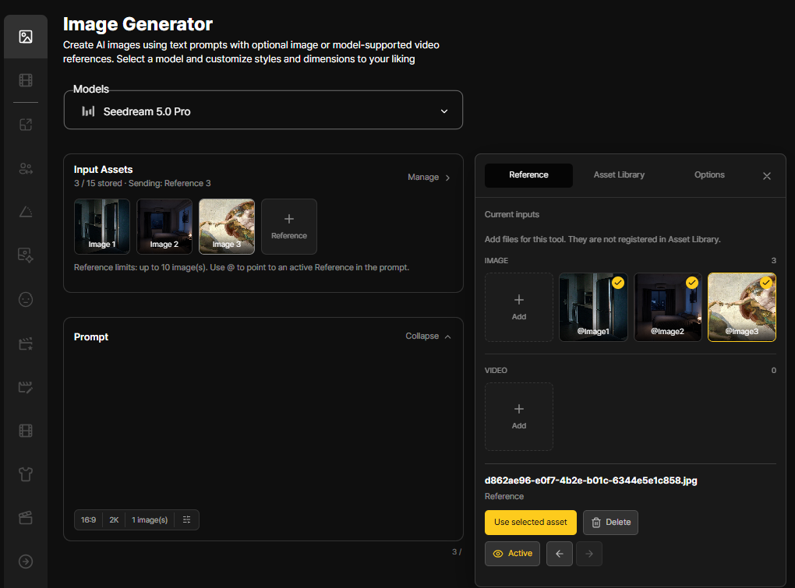
点击提示词输入框左侧的虚线方框图标，即可附加参考图像。
点击提示词输入框左侧的虚线方框图标，即可附加参考图像。
附加的图像会以 @image1, @image2 …的形式出现在提示词中，并可在提示词内引用。
参考图像为可选项，只用文字也能生成。
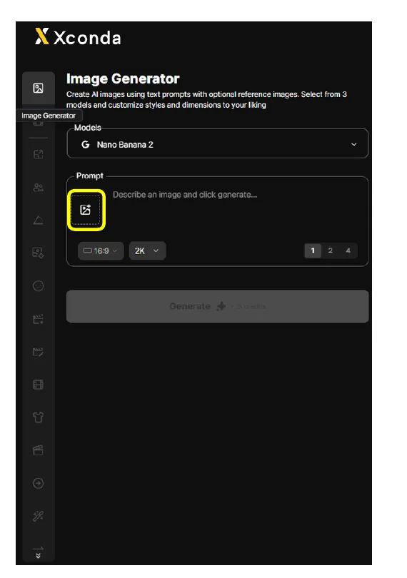
可附加的参考图最大数量因模型而异。
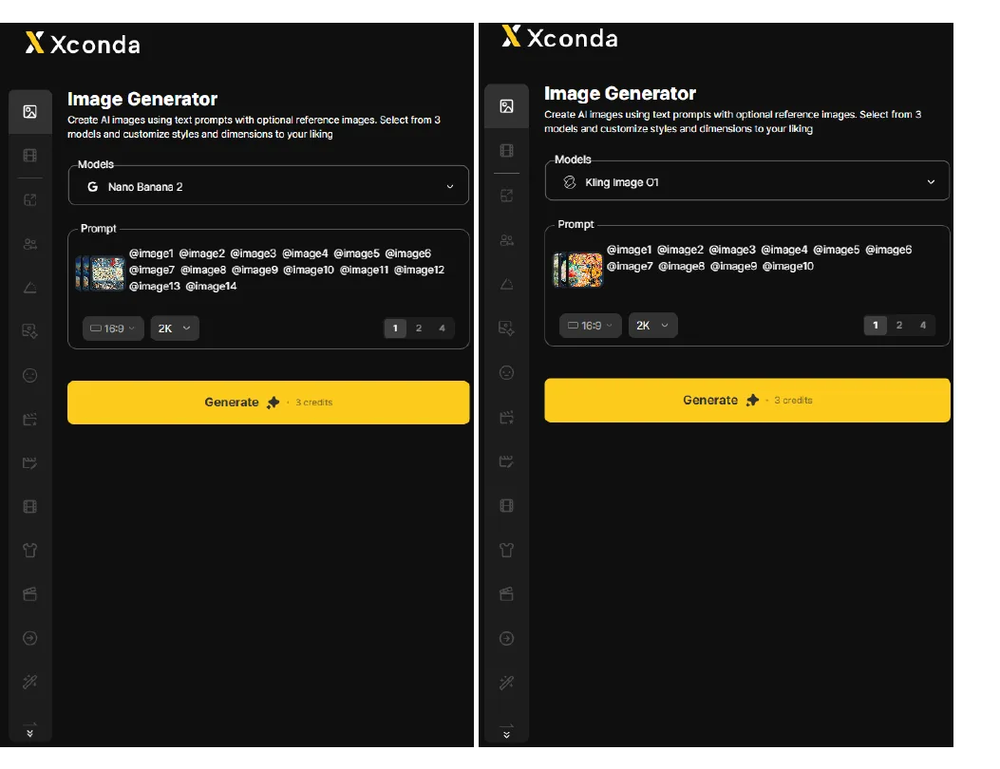
Z Image 与 Seedream 5.0 Lite 的参考图附加上限。
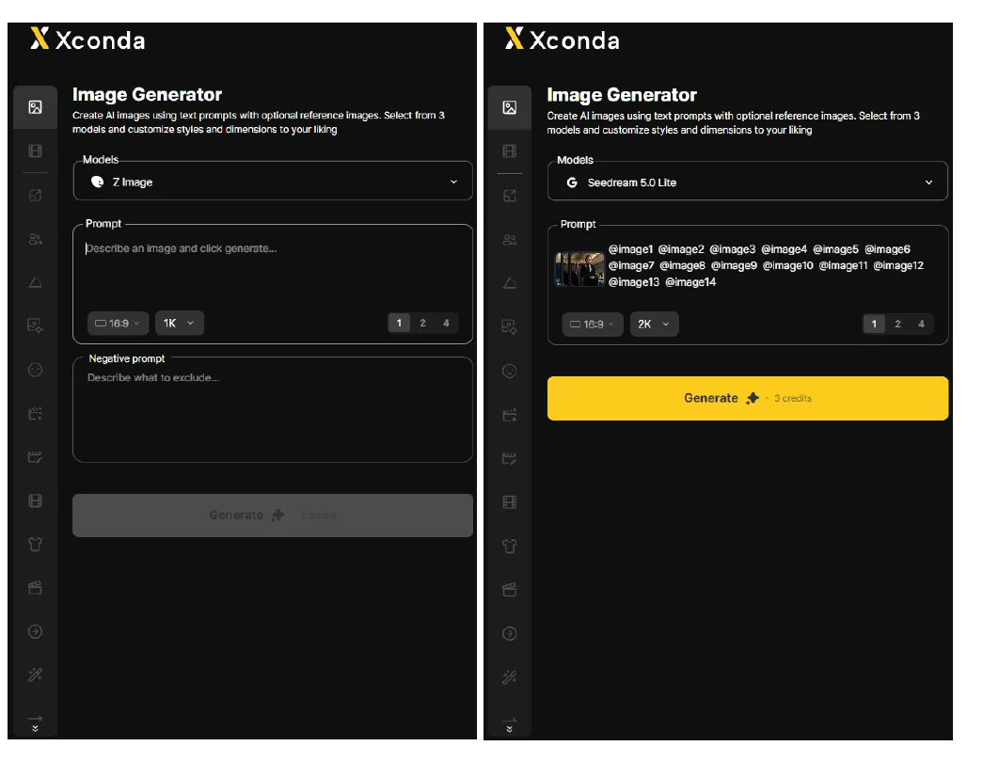
Grok Imagine 系列的参考图附加上限。
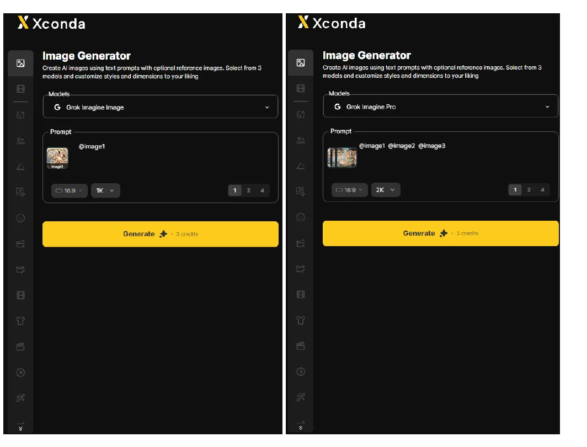
点击提示词输入框下方的比例按钮，可从 12 种宽高比中选择。
这 12 种比例依据输出媒介 —— 视频、SNS、印刷等 —— 而设定。最常用的是 16:9（横屏宽幅）、9:16（竖屏）和 1:1（方形）。
支持的宽高比可能因所选模型而异。更换模型时，若原先选择的比例不受支持，可能自动重置为默认值，因此请在选定模型后确认比例。
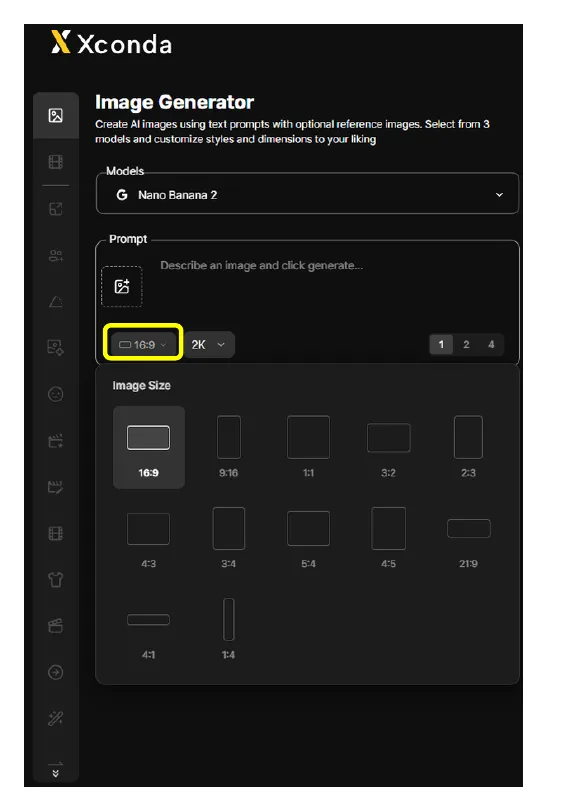
点击比例按钮旁的分辨率下拉菜单，可从 3 种分辨率中选择。
支持的分辨率因所选模型而异。 仅支持 1K，其他模型可在 1K、2K、4K 之间选择。默认分辨率也可能因模型而异，请在选定模型后确认分辨率。
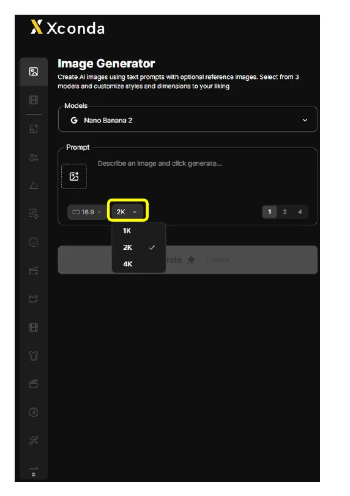
使用分辨率旁边的数字按钮，选择一次生成的图像数量。
根据工作目标从 3 个选项中选择。
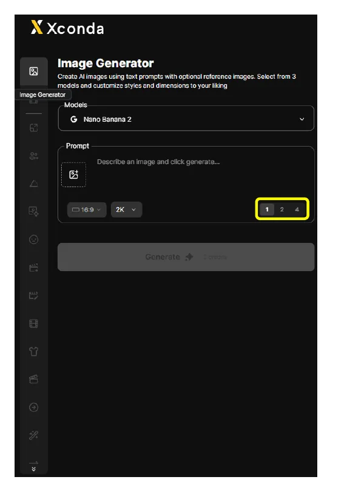
选择 Z Image 模型后，提示词下方会出现 Negative prompt 输入框。
Negative prompt 输入框只在选择 Z Image 模型时出现。
用文字输入希望从生成结果中排除的元素。
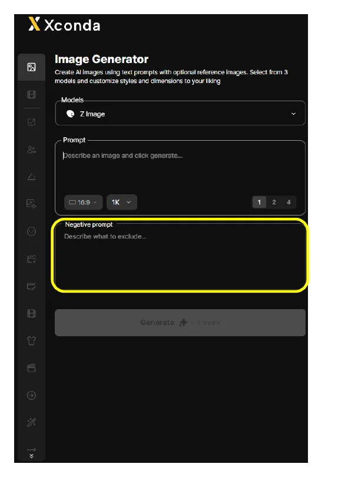
完成所有设置后，点击底部黄色的 Generate 按钮。
完成所有设置后，点击底部黄色的 Generate 按钮。按钮上显示的积分会被消耗，图像生成随即开始。
只有在输入提示词后按钮才会激活。若之前使用过，会自动套用上一次的提示词。
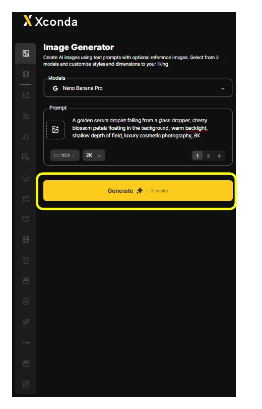
生成完成后，结果图像会显示在画面右侧。
生成完成后，结果图像会显示在画面右侧。
生成 4 张时，带编号的缩略图（1、2、3、4）会横向排列。
所使用的提示词会显示在每张结果下方。
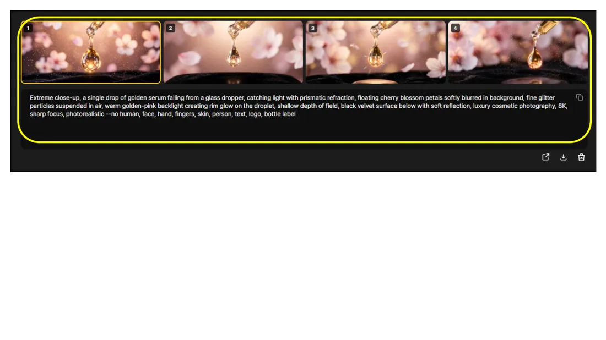
结果下方显示的提示词文本右上角有复制图标。
点击结果下方提示词文本右上角的复制图标。
点击后提示词会被复制到剪贴板，可用相同提示词重新生成，或用于其他模型。
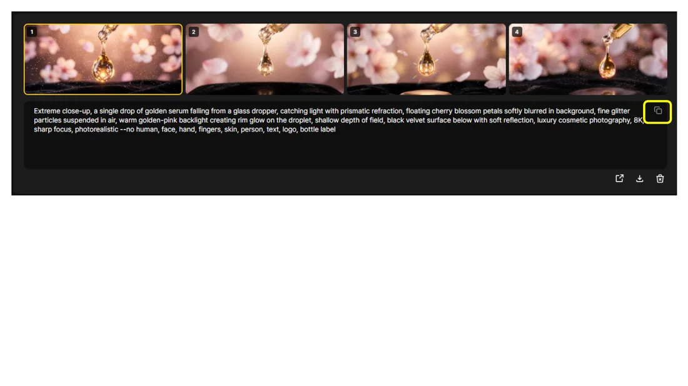
点击缩略图即可将图像放大至全屏。
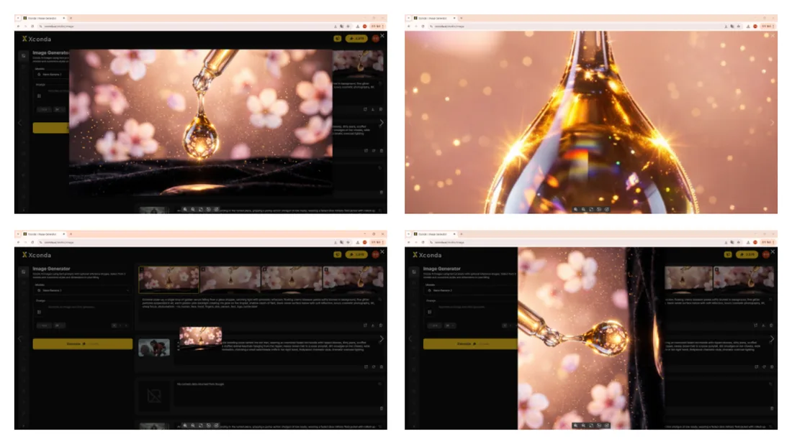
点击左右箭头（< >）可切换到其他生成结果。
使用底部工具栏放大和缩小。
使用底部工具栏将图像左右旋转 90°。
每张结果的右下角有三个图标。
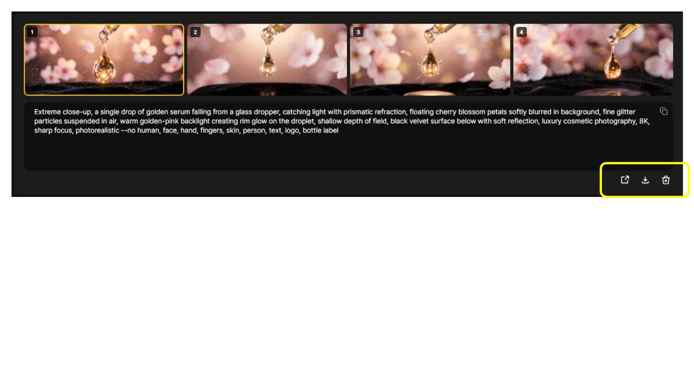
每张结果右下角的三个图标可分别用于在新窗口打开、下载和删除。
点击第一个图标即可在新窗口打开图像。
点击第二个图标（↓）即可下载图像。
点击第三个图标（垃圾桶）即可删除图像。